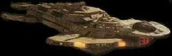

Unione Cardassiana - Classe Keldon |
|
|
|  |
Le navi di classe Keldon sono state progettate e utilizzate dall'Ordine
Ossidiano nel disastroso tentativo di attaccare i
Fondatori del
Dominio. I vascelli di questa
classe sono molto simili a quelli della classe Galor,
ma molto più potenti e veloci.
Dimensioni: 655 metri di lunghezza, 384 metri di Larghezza, 120 metri di
altezza
Armi: disgregatori, siluri fotonici
| Cornak Incrociatore distrutto dai Jem'Hadar. | The Die is Cast |
| [Senza Nome] Sei vascelli. | Defiant |